Food Log
Pratik Agarwal
Context
Goal 15% body fat (currently 81.5 kg, 21%). Daily targets ~1,800 kcal and 115-120g protein. Diet: vegetarian + eggs, high protein, gluten-free leaning.
Plan source: "Pratik and Sakshi Meal Plan 2026".
Daily totals
Estimated nutrition by day
Wednesday, October 7, 2026
- Morning
Cosmix protein shake, 1 scoop (38g)
Label: ~24g protein, ~138 kcal, ~1g sugar (per 1 scoop, 38g)
No photo provided. Pratik reported his morning Cosmix on WhatsApp at 9:33 AM IST. Assumed the usual 1 scoop (38g), as on October 6; amount and exact time consumed were not stated.
- 12:55 PM
Lunch (meal plan match): 4 spinach, lobia, paneer and capsicum tikkis with green dahi chutney
Estimate: ~30g protein, ~420 kcal, ~10g sugar (±15%; assumes 4 original patties, ~300g combined: ~150g cooked lobia, ~80g low-fat paneer, vegetables and a little binder, ~1.5 tsp cooking oil; ~30g yoghurt-herb chutney)
Four patties are visible, one partly eaten, and counted as four original patties. Dish and chutney matched to October 7 lunch in the meal plan; ingredients and amounts were not stated by Pratik. Recipe links could not be read, so this is an ingredient-based estimate. Masala broccoli and carrot-celery soup are not visible and are not counted. Eggs in the bowl behind the plate are held out pending confirmation they were part of his meal.
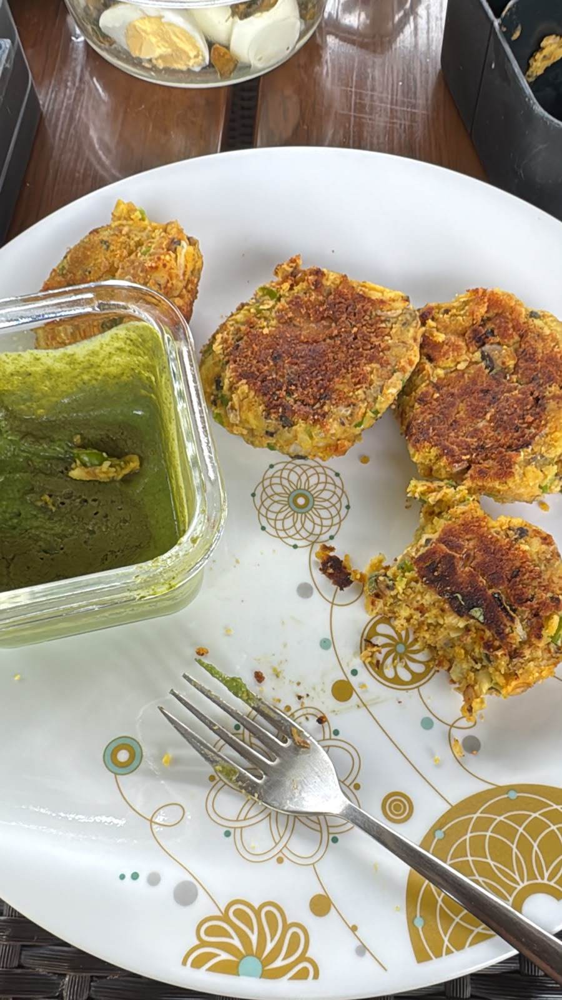
- 3:48 PM
Drink: iced matcha with oat milk, no added sugar or syrup
Estimate: ~3g protein, ~160 kcal, ~9g total sugar (±15%; assumes ~250ml barista oat milk plus ~2g matcha and ice; Oatly reference 61 kcal, 1.1g protein and 3.4g sugar per 100ml)
No photo or venue provided. Oat-milk brand and volume are unknown; Oatly is a reference, not the confirmed milk. No sweetener is counted. Total sugar comes from the oat milk, so no sugar added to the drink does not mean zero total sugar.
- 3:49 PM
Snack (off-plan): bowl of carrot sticks, cucumber sticks and a chunk of avocado
Estimate: ~3g protein, ~151 kcal, ~9g sugar (±15%; ~120g carrot, ~150g cucumber and ~50g avocado; no dressing or oil counted)
Photo portions estimated by sight. Today's snack row is berries and sunflower seeds for Sakshi, not this bowl. No other food or drink in the background is counted.
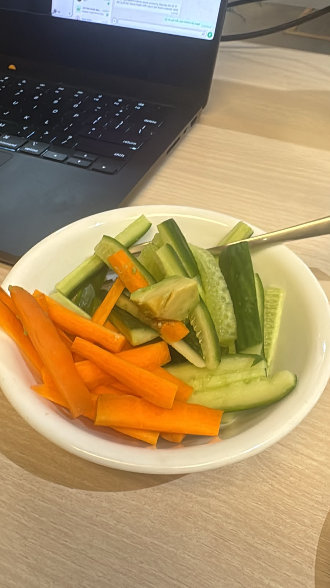
Estimated totals
Tuesday, October 6, 2026
- Morning
Cosmix protein shake, 1 scoop (38g)
Estimate: ~24g protein, ~138 kcal, ~1g sugar
No photo provided for this entry. Reported via Rose at 8:17 AM; the amount was assumed to be the usual 1 scoop, not stated by Pratik.
- 1:53 PM
Lunch (meal plan: creamy crunchy chana makhana salad): plate of white and black chickpea salad with chopped cucumber, tomato and pomegranate in a creamy yoghurt dressing
Estimate: ~24g protein, ~425 kcal, ~12g sugar (±15%; ~200g cooked chickpeas ~330 kcal / 18g protein; ~60g thick yoghurt dressing ~60 kcal / 6g protein; vegetables and pomegranate ~35 kcal / 5g sugar; roasted makhana not clearly visible, so not counted)
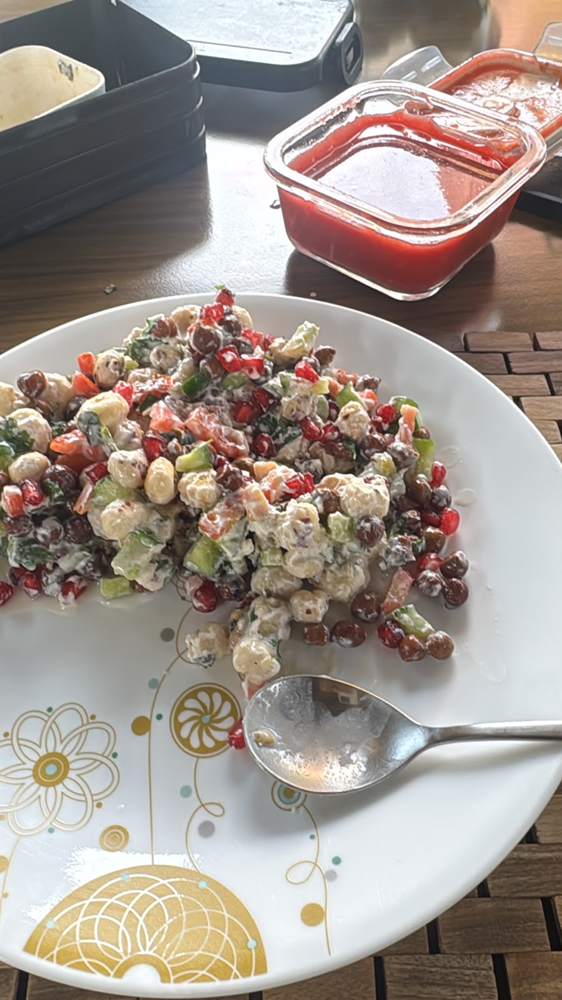
- 1:53 PM
Lunch (continued; meal plan: tomato beetroot soup): glass box of red soup
Estimate: ~3g protein, ~90 kcal, ~11g sugar (±15%; assumes ~250 ml tomato and beetroot soup, little oil; no paneer cubes visible; how much was drunk is not known)
Same photo as the salad. Soup identified from the plan menu, not stated by Pratik. A roti was not visible in the photo, so none is logged.
- 3:05 PM
Drink at Matcha Kura (off-plan): salted date milk matcha, as listed on the cafe's week specials board
Estimate: ~9g protein, ~275 kcal, ~36g sugar (±15%; Matcha Kura publishes no nutrition numbers I could find; assumes ~250 ml dairy milk ~160 kcal / 8g protein / 12g sugar, blended with 2 pitted dates ~110 kcal / 24g sugar, plus ~4g matcha; oat or other milk, or more dates, would shift this)
The photo is the specials board, not the drink. Venue named by Pratik as Matcha Kura. Matcha or hojicha was not stated; assumed matcha as he said.
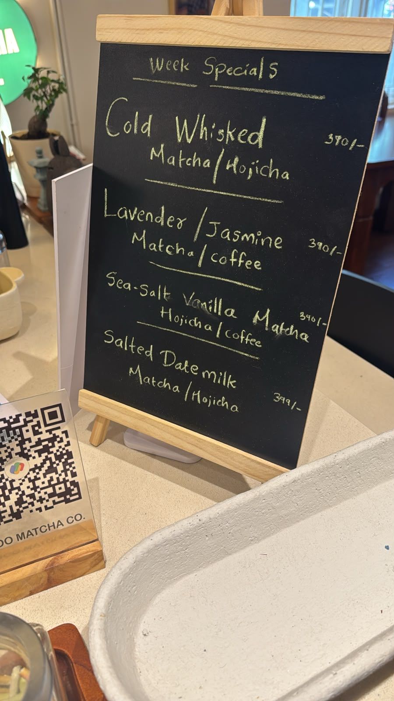
- 4:34 PM
Snack (off-plan): small bowl of carrot sticks and cucumber spears with mashed avocado
Estimate: ~3g protein, ~175 kcal, ~7g sugar (±15%; ~100g carrot ~41 kcal / 5g sugar; ~100g cucumber ~15 kcal / 2g sugar; ~75g avocado, mashed, ~120 kcal)
The tall glasses behind the bowl look like plain water, so no drink is logged.
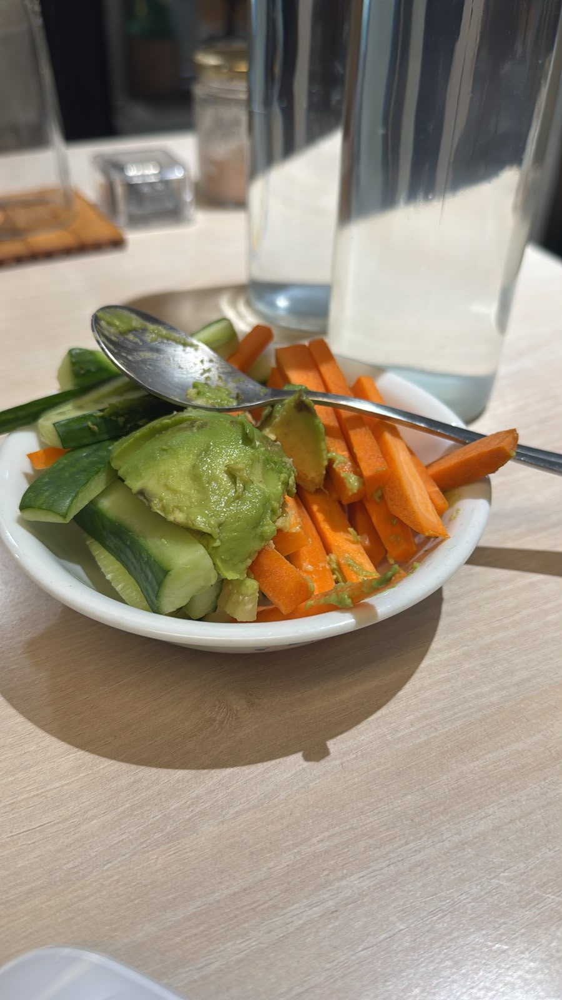
- 6:44 PM
Snack: 2 The Whole Truth peanut cocoa mini protein bars (2 x 27g)
Label: ~16g protein, ~254 kcal, ~13g sugar (2 bars; per 27g bar 7.8g protein, 127 kcal, 6.5g total sugar, 0g added sugar, 1.3g fibre)
Figures are the brand's published label values (Zepto product page), doubled; the back-label photo was too blurry to read. Pratik confirmed 2 packets at 6:46 PM; the photo shows one wrapper.
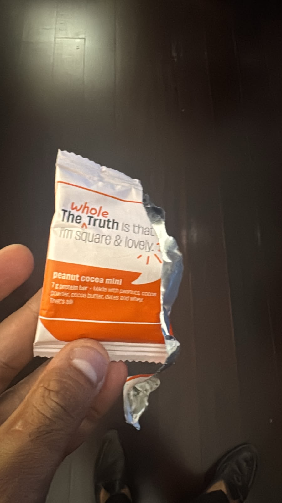
- 11:00 PM
Late-night snack: The Cinnamon Kitchen Almond Flour & Cacao Cookies, ~42g (60% of a 70g pack)
Label: ~9g protein, ~232 kcal, ~3.6g sugar (42g; brand label per 35g cookie: 7.5g protein, 193.4 kcal, 3g sugar)
Reported the next morning as eaten at 11 PM on October 6. Portion is approximate. Figures from the brand's label image; a Zepto same-name listing differs. The pack's own label would override these. Screenshot is the product listing, not a photo of the eaten portion.
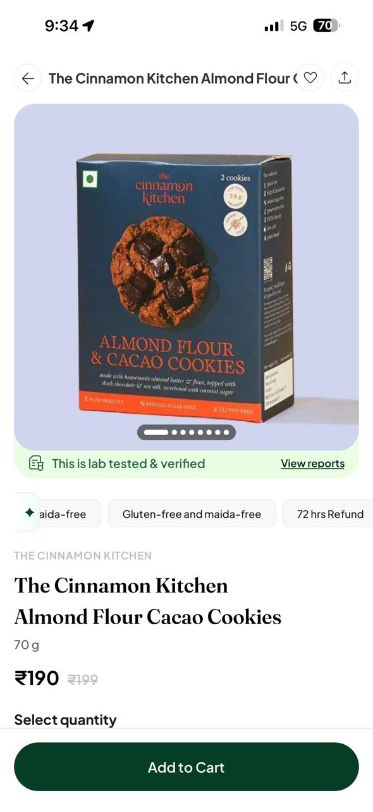
- 11:00 PM
Late-night snack: Mmmelt Trail Mix Dark Chocolate Bark, ~45g (60% of a 75g pack)
Label: ~3.3g protein, ~236 kcal, ~17.6g total sugar (~15.6g added sugar; 45g; per 100g: 7.4g protein, 525 kcal, 39g total sugar, 34.6g added sugar)
Reported the next morning as eaten at 11 PM on October 6. Portion is approximate. Figures read from the back-of-pack screenshot supplied by Pratik.
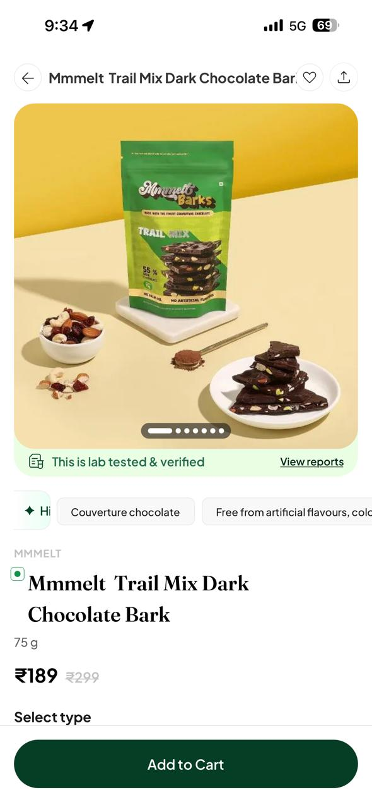
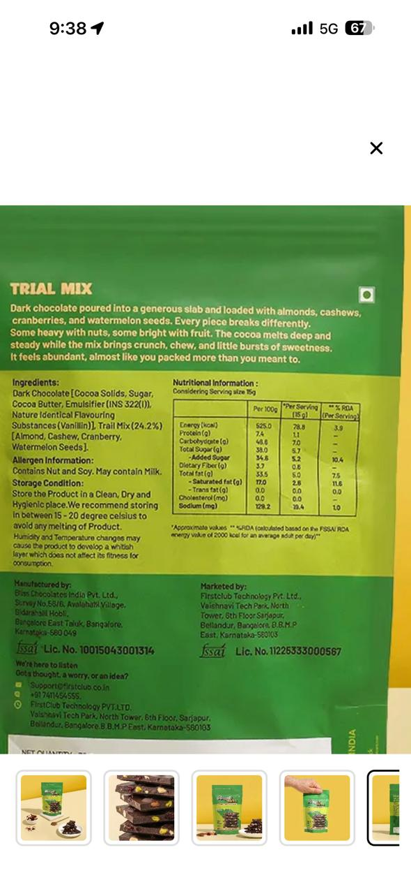
Estimated totals
Monday, October 5, 2026
- 9:30 AM
Cosmix protein shake, 1 scoop (38g)
Estimate: ~24g protein, ~138 kcal, ~1g sugar
No photo provided for this entry. Time reported at 12:32 PM as "around 9:30".
- 12:28 PM
Lunch (meal plan: yellow moong dal, sprouts and paneer tikkis with pan roasted masala grilled veggies): 4 golden tikkis with roasted peppers, cauliflower and mushroom
Estimate: ~27g protein, ~540 kcal, ~9g sugar (±15%; 4 tikkis of ~60g each, ~110 kcal / 6g protein apiece, pan-cooked with little oil; ~150g roasted veggies ~100 kcal / 3g protein / 8g sugar; no dip or sauce visible; one tikki is partly eaten, so counted as a whole)
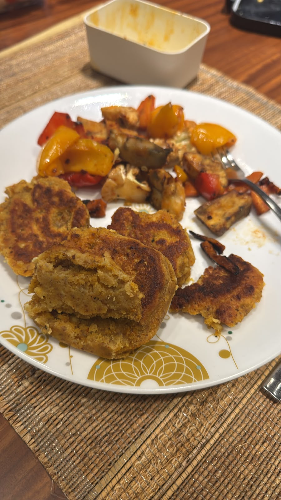
- 12:35 PM
Snack (off-plan; Monday's plan snack is a nut and seed ladoo with a mandarin): small glass box of pomegranate arils, diced papaya (or similar orange fruit), green capsicum bits and peanuts
Estimate: ~5g protein, ~160 kcal, ~12g sugar (±15%; ~50g pomegranate ~42 kcal / 7g sugar; ~60g papaya ~26 kcal / 4g sugar; ~20g capsicum ~5 kcal; ~15g peanuts ~85 kcal / 4g protein; no dressing visible)
Sent 7 minutes after the tikki lunch photo; logged as a separate entry, so it may have been eaten with lunch.
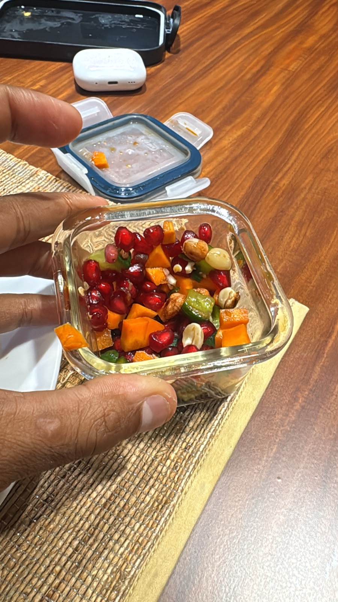
- 4:08 PM
Drink: carbonated lemon-lime beverage with coconut water and prebiotic fibre (PEPSMART), 1 can (250 mL)
Label: 0g protein, ~30 kcal, ~5.6g sugar (2.1g added; 3.8g fibre, 9.4g carbs per can)
Photo is the back label; assumed he drank the whole can, not confirmed.
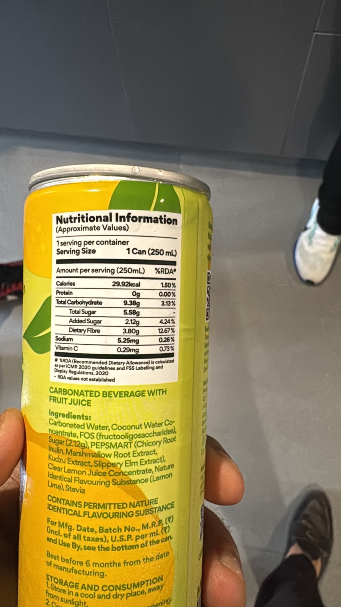
- 4:25 PM
Snack (off-plan; Monday's plan snack is a nut and seed ladoo with a mandarin): small bowl of carrot sticks, cucumber spears and sliced avocado
Estimate: ~3g protein, ~135 kcal, ~7g sugar (±15%; ~100g carrot ~41 kcal / 5g sugar; ~100g cucumber ~15 kcal / 2g sugar; ~50g avocado (a few wedges) ~80 kcal; no dip visible)
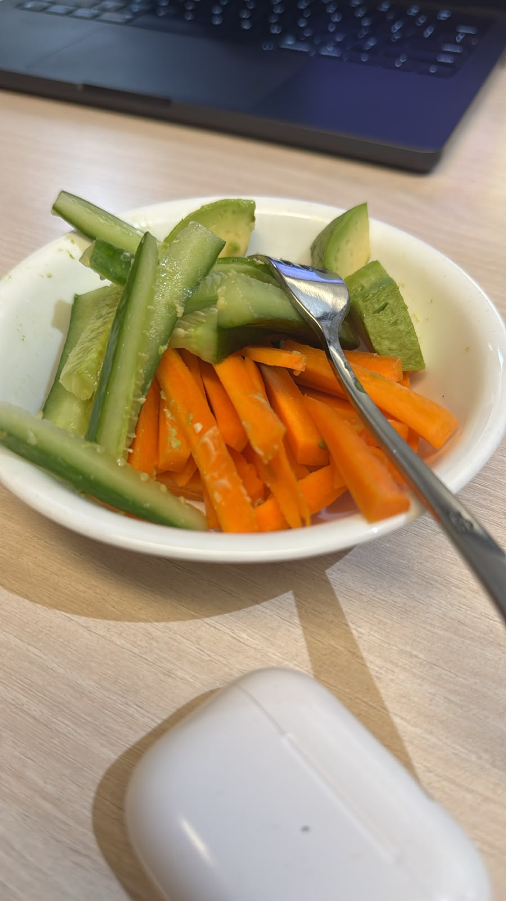
- 6:41 PM
Snack: cut green kiwi, about 2 kiwis
Estimate: ~2g protein, ~85 kcal, ~13g sugar (±15%; ~140g kiwi flesh, ~61 kcal / 9g sugar per 100g)
A white bowl is visible out of focus in the photo; it is not logged because it was not mentioned.
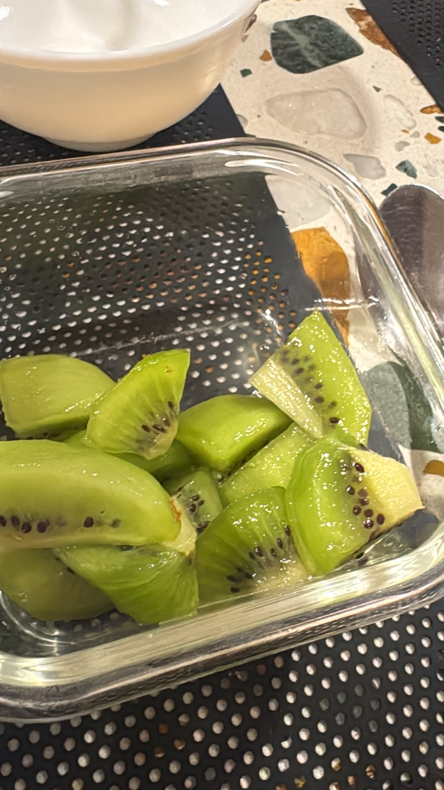
- 6:44 PM
Dinner (meal plan: tofu bhurji): scrambled spiced tofu with tomato and onion, partly eaten when photographed
Estimate: ~15g protein, ~190 kcal, ~4g sugar (±15%; ~120g bhurji as shown, little oil; the portion eaten before the photo is unknown, so this counts what is on the plate)
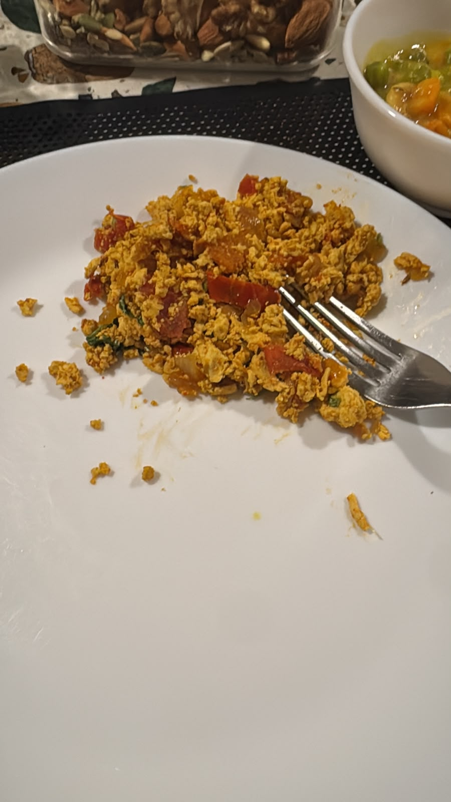
- 6:44 PM
Dinner (continued; meal plan: mixed vegetable dal): bowl of dal with peas and carrot
Estimate: ~8g protein, ~150 kcal, ~4g sugar (±15%; ~200g thin vegetable dal with peas and carrot, little oil; amount eaten before the photo is not known)
A bag of nuts is visible beside the bowl; it is not logged because it was not mentioned.
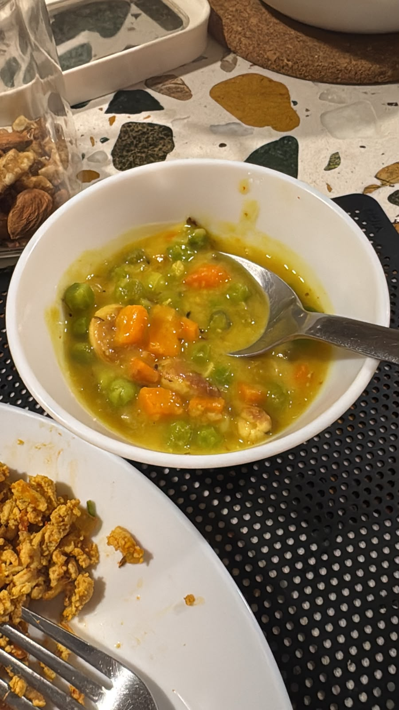
- 6:44 PM
Dinner side: bowl of loki (bottle gourd) raita
Estimate: ~5g protein, ~90 kcal, ~6g sugar (±15%; ~150g plain curd-based raita with grated bottle gourd, no added sugar)
Identified by Pratik as loki raita. Likely the same white bowl seen out of focus in the 6:41 PM kiwi photo.
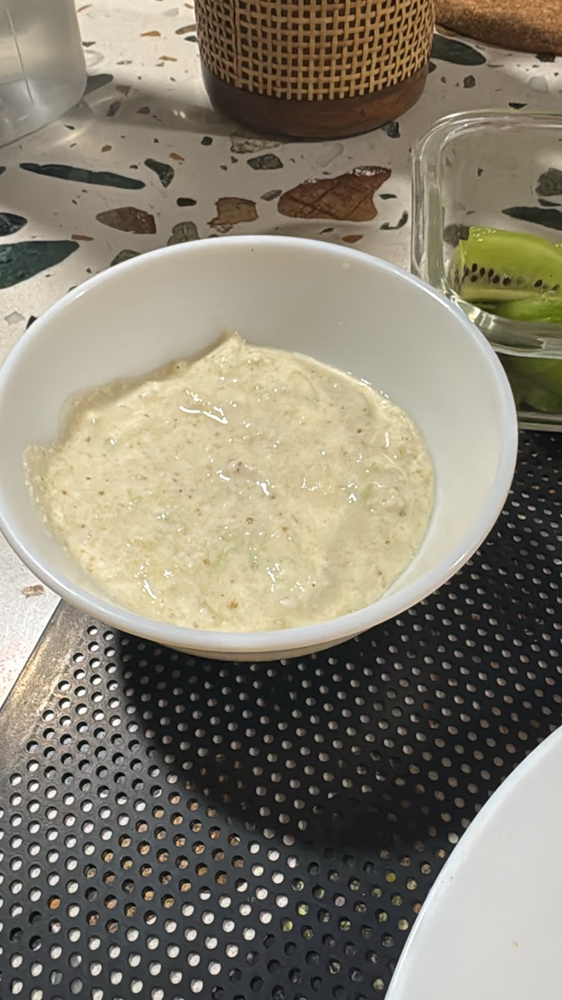
- 7:04 PM
Dinner (continued): 3/4 of a bajra roti with ghee (meal plan had a quinoa and jowar flour roti, so this is a swap)
Estimate: ~3g protein, ~150 kcal, ~1g sugar (±15%; assumes one home-made roti from ~38g bajra flour, ~137 kcal, so 3/4 is ~103 kcal; plus ~1 tsp ghee, ~45 kcal)
No photo provided for this entry. Ghee amount is an assumption, not stated.
- 8:31 PM
Evening snack (off-plan): skyr (about 20g protein worth), 10g dark chocolate and some pomegranate and blueberry smoothie
Estimate: ~22g protein, ~255 kcal, ~22g sugar (±15%; skyr sized as 20g protein, assumed ~180g plain skyr at ~11g protein per 100g, ~115 kcal / 6g sugar; 10g dark chocolate, assumed 70-85%, ~60 kcal / 2g sugar; smoothie quantity not stated, assumed a small glass of ~175 ml made from fruit only, ~80 kcal / 14g sugar)
No photo provided for this entry. Skyr amount corrected by Pratik at 8:48 PM (20g of protein, not 20g of skyr). Skyr brand, smoothie size and any added sweetener or milk are assumptions.
Estimated totals
Sunday, October 4, 2026
- After midnight
Late night: personal pizza from Brik Oven
Estimate: ~22g protein, ~550 kcal, ~5g sugar (±15%; Brik Oven publishes no numbers; based on an ~8-inch Neapolitan margherita-style pizza, about 530 kcal for a comparable 8-inch from another Bangalore Neapolitan chain; toppings not stated)
No photo provided for this entry. Reported at 10:30 AM on Oct 4 as "last night, after midnight"; exact time not stated.
- After midnight
Late night (continued): a slice of almond flour cake
Estimate: ~8g protein, ~250 kcal, ~14g sugar (±15%; recipe-card nutrition for one slice of almond flour cake is ~200-260 kcal, 8-9g protein, 13-14g sugar; source bakery and slice size not stated)
No photo provided for this entry. Reported at 10:30 AM on Oct 4 as "last night, after midnight"; exact time not stated.
- 12:37 PM
Lunch (not on a meal plan; the plan sheet has no Sunday): guacamole and pico de gallo on one thick slice of toast
Estimate: ~6g protein, ~280 kcal, ~3g sugar (±15%; ~1/3 cup guacamole, one thick slice, little oil; no photo caption or dish name from him)
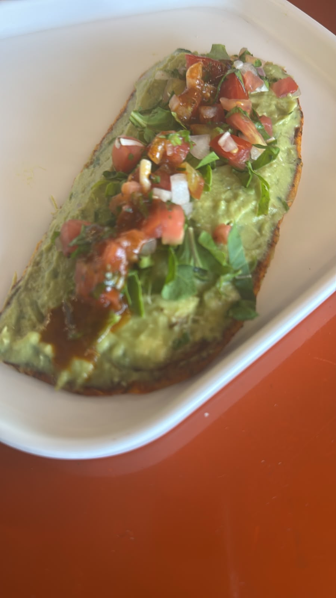
- 12:37 PM
Lunch (continued): bowl of rice, spiced tofu cubes, cucumber-tomato salad, creamy white sauce and a red spice paste (possibly an open shawarma-style bowl; name not confirmed)
Estimate: ~20g protein, ~470 kcal, ~7g sugar (±15%; ~1/2 cup rice ~130 kcal / 3g; ~100g spiced tofu cubes ~170 kcal / 14g; salad ~40 kcal; sauces ~130 kcal)
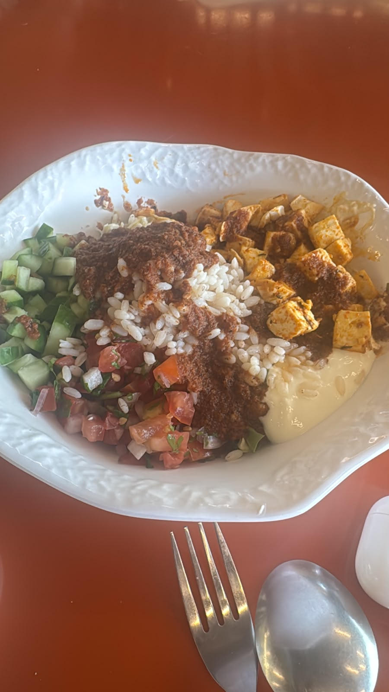
- 1:33 PM
Snack: pomegranate arils, small container (~150g)
Estimate: ~3g protein, ~125 kcal, ~20g sugar (±15%; ~83 kcal, 1.7g protein, 13.7g sugar per 100g)
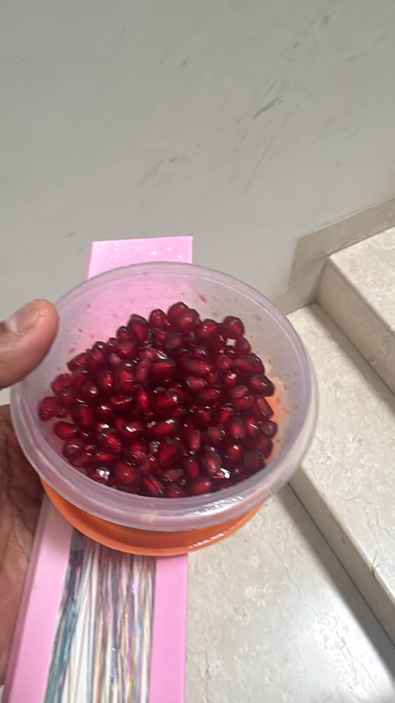
- 5:21 PM
Turmeric matcha latte at Lavonne, ~300 ml glass
Estimate: ~8g protein, ~180 kcal, ~16g sugar (±15%; assumes ~250 ml dairy milk plus a little sweetener or syrup; Lavonne publishes no numbers or milk/sweetener details)
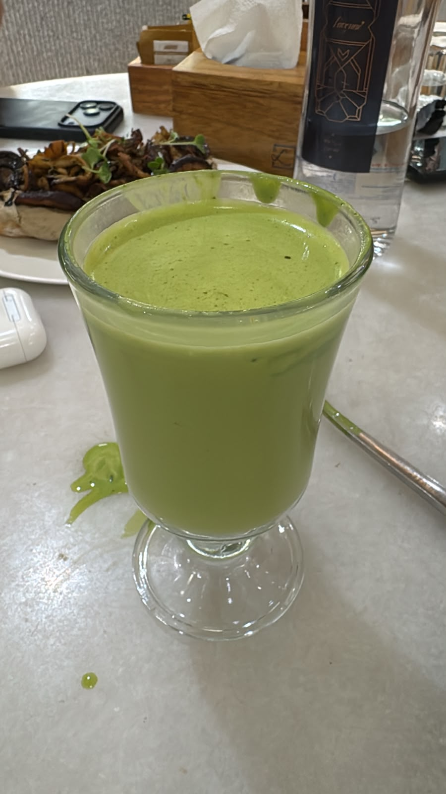
- 7:28 PM
Dinner at Burma Burma (Ecoworld): a salad (type not stated), half a tofu soup, wild mushroom rice
Estimate: ~20g protein, ~750 kcal, ~7g sugar (±15%; salad assumed tea leaf salad ~230 kcal / 7g; half tofu soup ~70 kcal / 4g; wild mushroom fried rice ~250g of the 300g serving ~450 kcal / 9g; Burma Burma publishes no nutrition)
No photo provided for this entry.
Estimated totals
Saturday, October 3, 2026
- 9:34 AM
Cosmix protein shake, 1 scoop (38g)
Estimate: ~24g protein, ~138 kcal, ~1g sugar
No photo provided for this entry.
- 11:40 AM
Late breakfast: sauteed spinach and mushrooms with 4 boiled egg whites (not on the Saturday plan, which was moong dal idli with sambar and 2 egg whites)
Estimate: ~17g protein, ~146 kcal, ~2g sugar (±15%; small bowl, little oil; 4 egg whites ~14g / ~68 kcal)
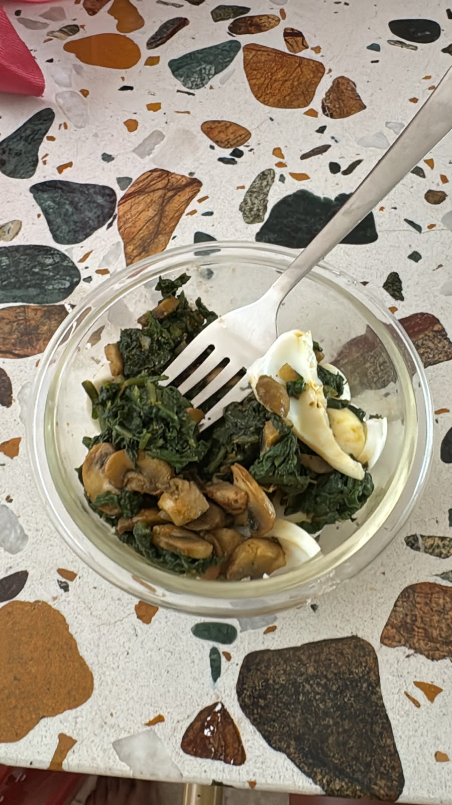
- 11:40 AM
Late breakfast (continued): dragon fruit cubes, ~150g
Estimate: ~1g protein, ~90 kcal, ~13g sugar (±15%)
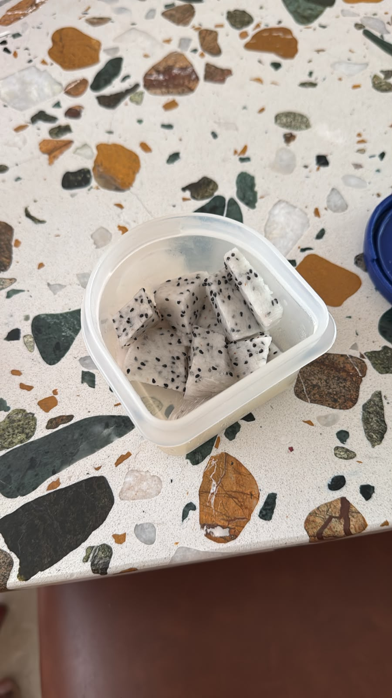
- 3:00 PM
Lunch: 3 green falafel-style patties, hummus, a partly eaten cheese and tomato flatbread slice, cucumber-tomato salad (patties, hummus and salad match Thursday's plan dinner, so likely leftovers; not on Saturday's lunch plan)
Estimate: ~16g protein, ~390 kcal, ~7g sugar (±15%; patties ~9g / ~180 / ~2g; flatbread piece ~4g / ~110 / ~2g; hummus ~2 tbsp ~2g / ~70 / ~0g; salad ~1g / ~30 / ~3g)
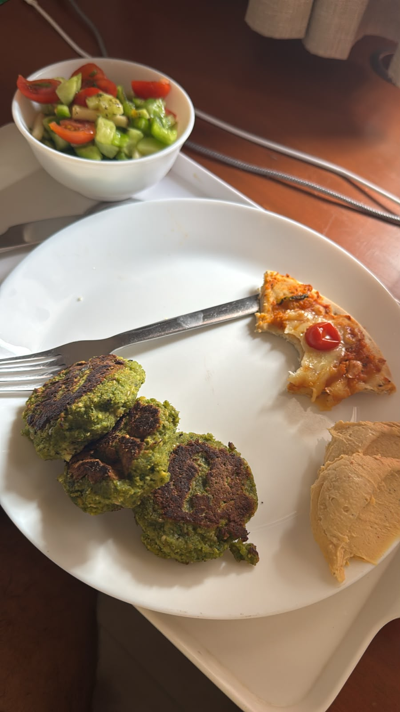
- 7:06 PM
Dinner (today's planned lunch, served as dinner): Mexican Quinoa, Veggies, Beans and Low-Fat Paneer Bowl + quinoa-yogurt mix
Estimate: ~29g protein, ~470 kcal, ~8g sugar (±15%; plate partly eaten when photographed; quinoa ~3/4 cup, beans ~1/3 cup, ~100g paneer cubes, sauce, small quinoa-yogurt side)
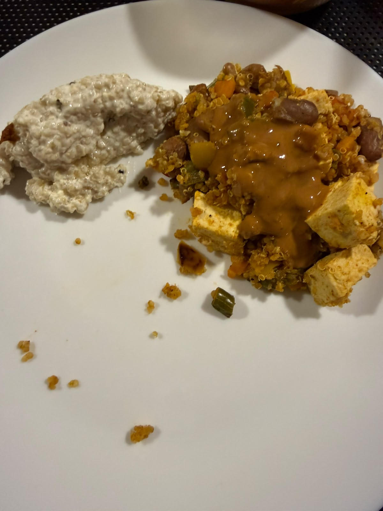
- 7:24 PM
Dessert/snack: "one date and a little cocoa powder smoothie" (his words, via a note)
Estimate: ~20g protein, ~250 kcal, ~20g sugar (±15%; assumes his usual blend of Greek yogurt, cocoa, peanut butter, almond milk and ice plus 1 date; ingredients and portion not confirmed, so treat as uncertain)
No photo provided for this entry.
- 9:39 PM
Dessert: LICK - Raspberry Cheesecake scoop (100g) + Hallelujah cookie (his words: "ice cream scoop 18l from lick and one cookie"; scoop later identified as Raspberry Cheesecake, 100g, and the cookie as LICK's Hallelujah)
Estimate: ~8g protein, ~530 kcal, ~44g sugar (±15%; scoop ~280 kcal / ~5g / ~26g sugar, cookie assumed 50-60g ~250 kcal / ~3g / ~18g sugar; LICK publishes no nutrition panel for either)
No photo provided for this entry.
Estimated totals
Friday, October 2, 2026
- Morning
Cosmix protein shake, 1 scoop (38g)
Estimate: ~24g protein, ~138 kcal, ~1g sugar
No photo provided for this entry.
- 11:10 AM
Sprouted moong with tomato and spices, plus boiled eggs (about 5 halves, mostly whites), in a glass lunch box (not on the Friday meal plan)
Estimate: ~25g protein, ~310 kcal, ~7g sugar (±15%; moong ~1.25 cups cooked ~11g / ~200 / ~6g; eggs ~2.5 egg equivalents, mostly whites ~14g / ~110 / ~1g)
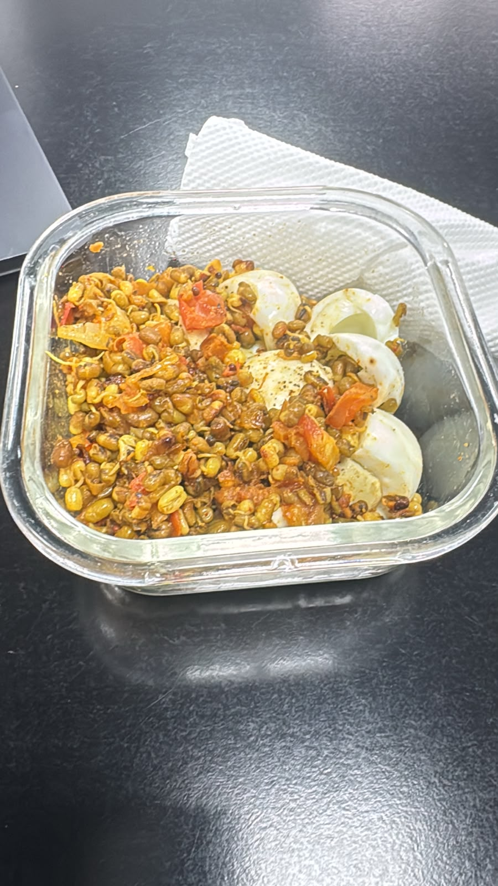
- 1:55 PM
Lunch at Panetteria, Indiranagar: half of a nduja pistachio sandwich (vegetarian nduja, sun-dried-tomato style)
Estimate: ~9g protein, ~260 kcal, ~3g sugar (±15%; half of a ~18g / ~520 kcal / ~6g focaccia/schiacciata-style sandwich; Panetteria publishes no numbers; more items may follow)
No photo provided for this entry.
- 2:45 PM
Lunch (continued, Panetteria, Indiranagar): half of a truffle lasagna
Estimate: ~12g protein, ~325 kcal, ~4g sugar (±15%; half of a small-portion lasagna; Panetteria publishes no numbers)
No photo provided for this entry.
- 2:50 PM
Lunch (continued, Panetteria, Indiranagar): chocolate torte with a scoop of vanilla ice cream - a quarter of the plate
Estimate: ~1.5g protein, ~155 kcal, ~12g sugar (±15%; a quarter of a ~620 kcal / ~6g / ~48g plate; Panetteria publishes no numbers)
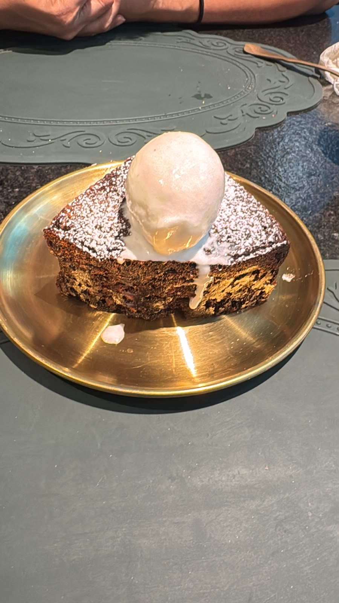
- 6:00 PM
Cosmix protein shake, 1 scoop (38g) - second of the day
Estimate: ~24g protein, ~138 kcal, ~1g sugar
No photo provided for this entry.
- 6:00 PM
Golden kiwi, 1.5 fruits
Estimate: ~1g protein, ~75 kcal, ~11g sugar (±15%)
No photo provided for this entry.
- 6:00 PM
Pink guava, 1 fruit
Estimate: ~2g protein, ~65 kcal, ~9g sugar (±15%)
No photo provided for this entry.
- 6:55 PM
Dinner: paneer tikka (~4 pieces, ~140g), sauteed zucchini with a little broccoli (the plan had roasted broccoli), 2 avocado wedges, 1 thick slice of dark multigrain bread
Estimate: ~33g protein, ~650 kcal, ~3g sugar (±15%; paneer ~25g / ~350; vegetables ~2g / ~50; avocado ~1.5g / ~100; bread ~5g / ~150)
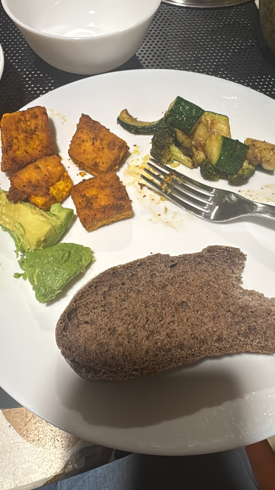
Estimated totals
Thursday, October 1, 2026
- ~2:20 PM
Cosmix protein shake, 1 scoop (38g), at Mumbai airport
Estimate: ~24g protein, ~138 kcal, ~1g sugar
No photo provided for this entry.
- ~2:20 PM
Lunch (airport instead of the Thursday meal plan chickpea-paneer wrap): masala uttapam, 1 serving (with the usual sambar and chutney)
Estimate: ~9g protein, ~380 kcal, ~5g sugar (±15%; assumes one large uttapam with potato masala, sambar and coconut chutney; portion and oil not seen)
No photo provided for this entry.
- 4:18 PM
IndiGo Bhatti Paneer Salad, full pack (128g), on flight 6E 5255
Label: ~13.4g protein, ~232 kcal, ~1.5g sugar (per 128g pack; label also lists 5.6g carbs, 17.3g fat, 349mg sodium)
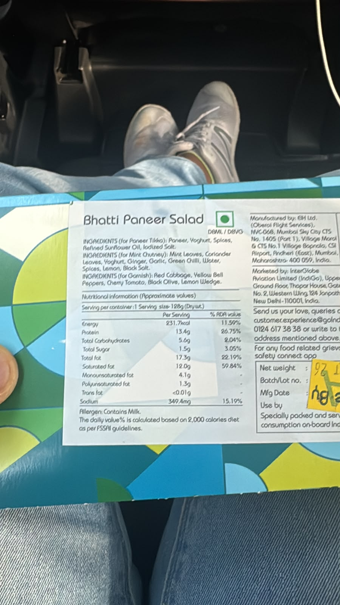
- 7:42 PM
Dinner at home (not on the Thursday meal plan, which was falafel, hummus, Shirazi salad and roasted broccoli): one plate of pasta
Estimate: ~16g protein, ~500 kcal, ~8g sugar (±15%; assumes ~1.5 cups cooked regular pasta with tomato-based sauce, a little oil and cheese; type and sauce not stated)
No photo provided for this entry.
- 7:42 PM
Local Ferment Co kombucha, 250 ml bottle
Label: ~0g protein, ~33 kcal (brand states 13 kcal per 100 ml), ~7g sugar (estimate; sugar not published, flavour not stated)
No photo provided for this entry.
Estimated totals
Wednesday, September 30, 2026
- Morning
Cosmix protein shake, 1 scoop (38g)
Estimate: ~24g protein, ~138 kcal, ~1g sugar
No photo provided for this entry.
- 1:55 PM
Lunch (per Wednesday meal plan): edamame low-fat paneer shikampuri kebabs, ~2.5 pieces, roasted cauliflower (~1 cup), green chutney
Estimate: ~21g protein, ~370 kcal, ~9g sugar (±15% - kebabs ~16g / ~250 / ~5g; cauliflower ~4g / ~100 / ~3g; chutney ~1g / ~20 / ~1g)
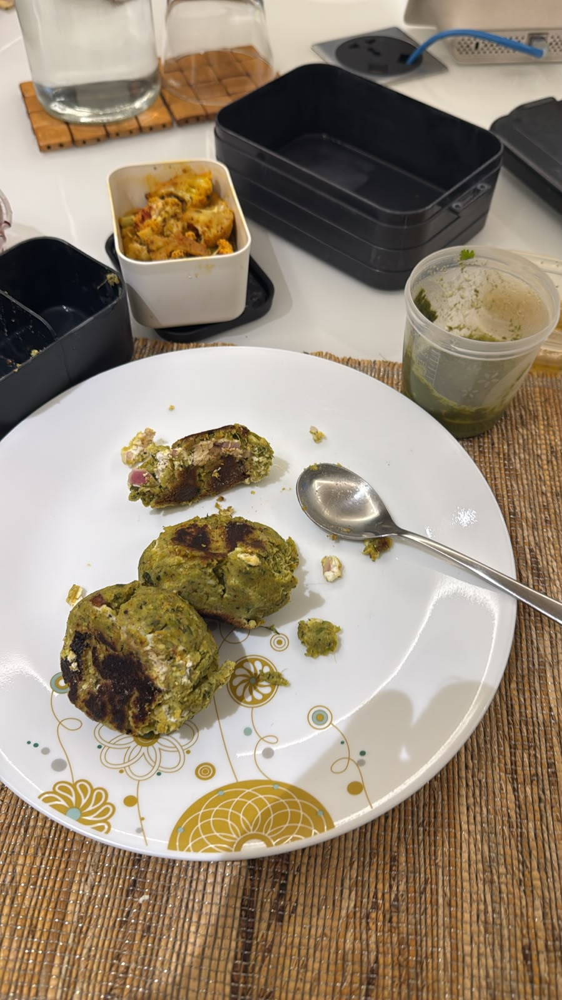
- 2:03 PM
Lunch (continued, per Wednesday meal plan): sprouted moong salad with grated beetroot, carrot, cucumber, coriander and pomegranate - half plate (he ate half)
Estimate: ~7g protein, ~140 kcal, ~8g sugar (±15%; half portion)
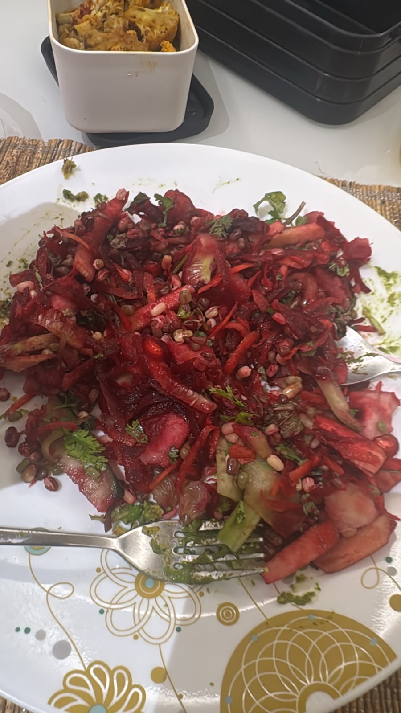
- 4:42 PM
Hot matcha latte, unsweetened (Smoor, BLR airport), small cup
Estimate: ~6g protein, ~110 kcal, ~9g sugar (±15%; dairy milk, no added sugar - milk lactose only; Smoor publishes no numbers)
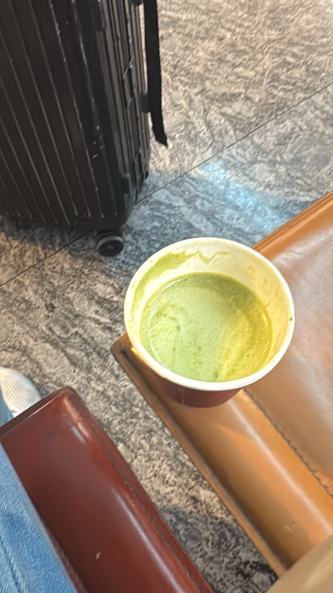
- 7:42 PM
Cosmix protein shake, 1 scoop (38g) - second of the day
Estimate: ~24g protein, ~138 kcal, ~1g sugar
No photo provided for this entry.
- 7:42 PM
Paper Boat Mixed Nuts with Pepper, full 50g pack (1 serving)
Label: ~9g protein, ~316 kcal, ~2.7g sugar (50g pack; label per 100g: 631.6 kcal, 17.9g protein, 5.3g total sugars, 0g added sugar)
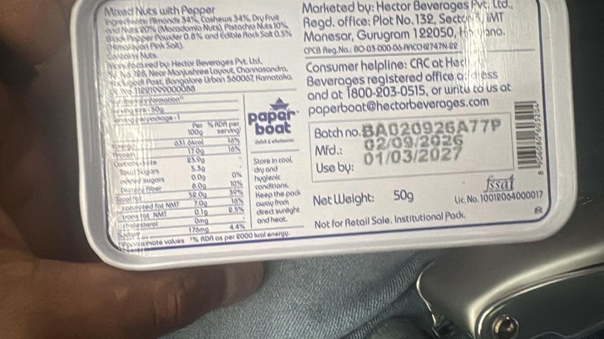
- 11:55 PM
Kulfi at New Kulfi, Mumbai (meetup with Puneet), 1 serving (~100g)
Estimate: ~5g protein, ~220 kcal, ~24g sugar (±15%; assumes a standard malai kulfi - flavour not specified)
No photo provided for this entry.
Estimated totals
Monday, September 28, 2026
- Morning
Cosmix protein shake, 1 scoop (38g)
Estimate: ~24g protein, ~138 kcal, ~1g sugar
No photo provided for this entry.
- 12:59 PM
Lunch: high-protein lauki muthiya plate (per Monday meal plan) - ~10-12 muthiya, roasted masala vegetables (carrots, peppers, onions), beetroot Greek yogurt dip
Estimate: ~22g protein, ~350 kcal, ~9g sugar (±15%; per-serving numbers from the meal-plan recipe, includes vegetables and dip)
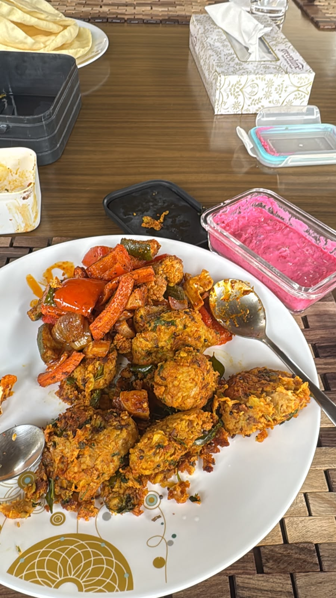
- 4:11 PM
Afternoon snack: carrot sticks, celery sticks + half an avocado, chopped
Estimate: ~3g protein, ~185 kcal, ~8g sugar (±15%)
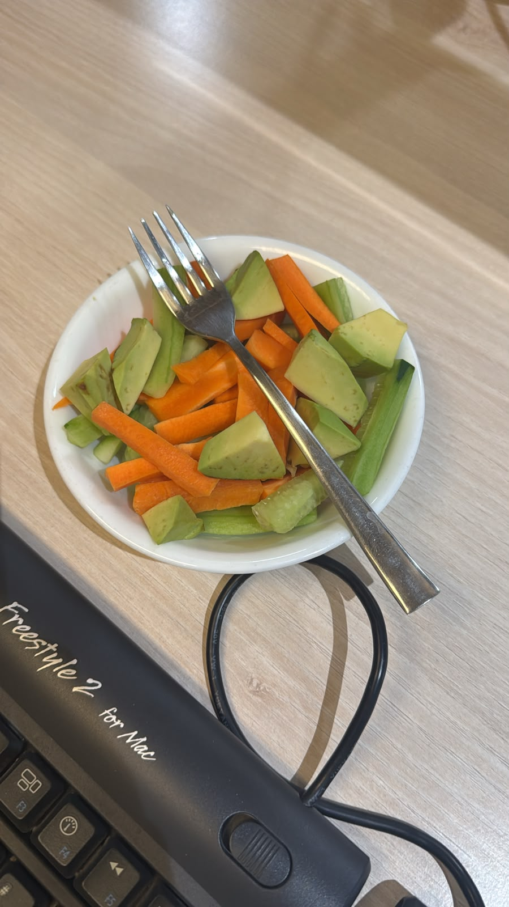
- 6:42 PM
Evening snack: Millet Amma Jeera Bhakri (baked), 2 pieces
Label: ~3.7g protein, 184 kcal, ~0.1g sugar (2-piece package serving)
No photo provided for this entry.
- 6:42 PM
Evening snack: tutti frutti biscuits, 4 pieces
Estimate: ~2g protein, ~180 kcal, ~24g sugar (±15%; ~45 kcal / ~6g sugar per biscuit)
No photo provided for this entry.
- 6:52 PM
Dinner (per Monday meal plan): palak low-fat paneer 1 cup, brown rice 1/4 cup, bhindi do pyaaza 1/4 cup
Estimate: ~18g protein, ~315 kcal, ~6g sugar (±15% - palak paneer ~16g / ~230 / ~4g; rice ~1g / ~45 / ~0g; bhindi ~1g / ~40 / ~2g)
No photo provided for this entry.
Estimated totals
Sunday, September 27, 2026
- 10:04 AM
Cosmix protein shake, 1 scoop (38g)
Estimate: ~24g protein, ~138 kcal, ~1g sugar
No photo provided for this entry.
- 11:46 AM
Boiled eggs, 3
Estimate: ~19g protein, ~216 kcal, ~1g sugar
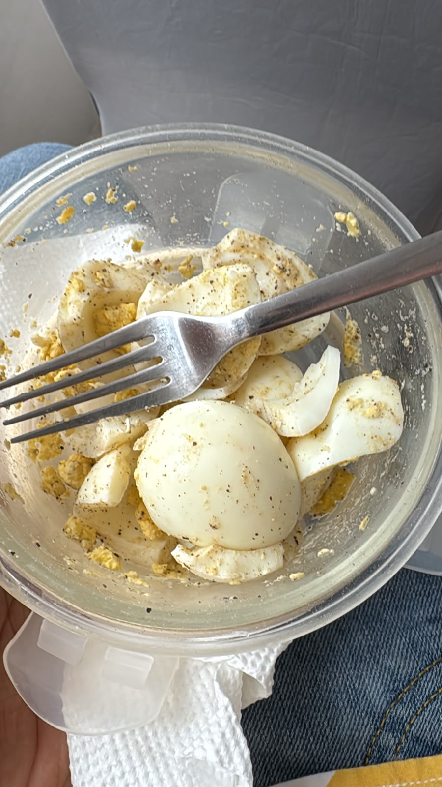
- 11:52 AM
Palak patta chaat (dahi, sev, pomegranate, chutneys), half plate
Estimate: ~4.5g protein, ~190 kcal, ~9g sugar
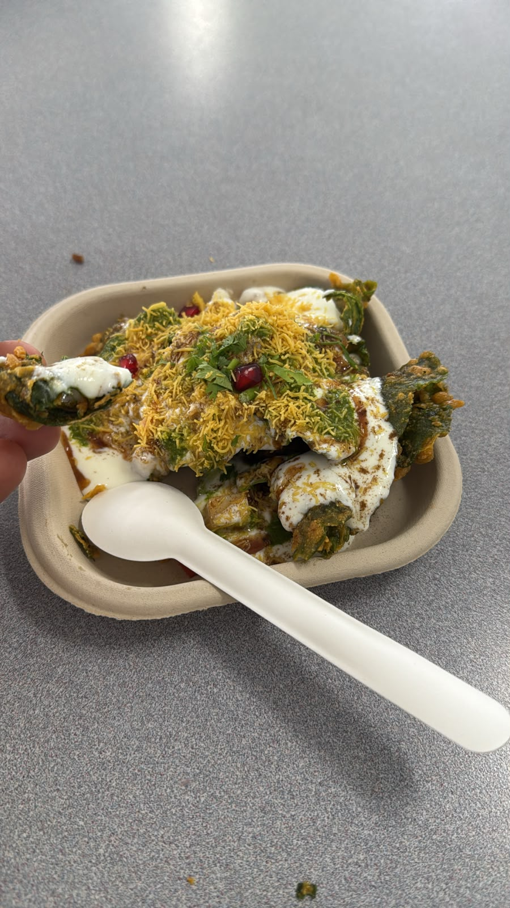
- 12:07 PM
Margherita pizza, 1 small slice
Estimate: ~7g protein, ~170 kcal, ~2g sugar
No photo provided for this entry.
- 1:20 PM
Lunch: Tostada di jicama, half portion (Comedor, Indiranagar)
Estimate: ~5g protein, ~240 kcal, ~3g sugar (±15%; half portion)
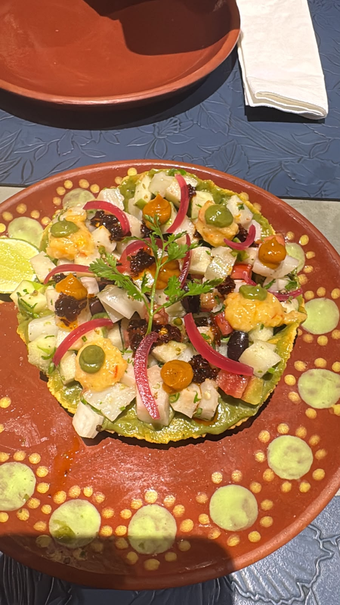
- 1:29 PM
Lunch (continued): Chiles Rellenos de Mole - mulato/ancho chili stuffed with seasonal vegetables in mole verde, half portion (Comedor, Indiranagar)
Estimate: ~10g protein, ~250 kcal, ~3g sugar (±15%; half portion)
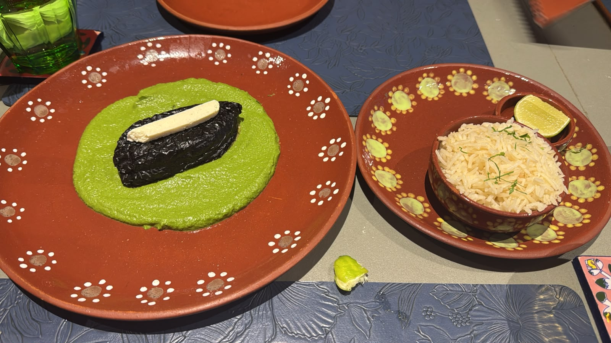
- 1:49 PM
Lunch (continued): Queso Birria taco - lentil filling with consomme, avocado and pico de gallo, 1 taco (Comedor, Indiranagar)
Estimate: ~9g protein, ~250 kcal, ~3g sugar (±15%)
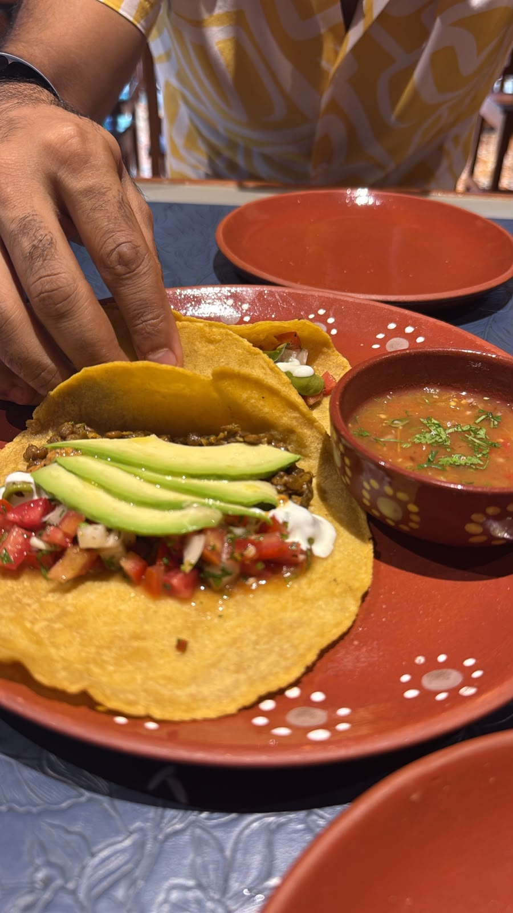
- 4:30 PM
Dessert: assorted mochi box of 4 - a quarter of each (one mochi total), Ame's, Indiranagar
Estimate: ~2g protein, ~120 kcal, ~12g sugar (±15%)
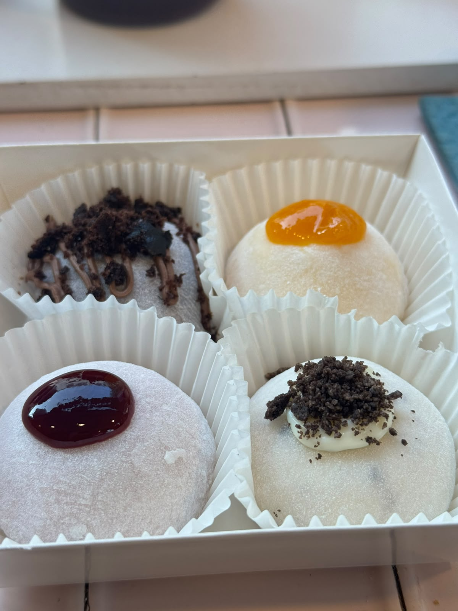
- 6:30 PM
Evening snack: small cup of pomegranate + one Milky Mist Greek yogurt (natural, no added sugar, ~300g cup)
Label: 25g protein (Milky Mist pack). Estimate: ~26g protein total, ~310 kcal, ~24g sugar (±15% - pomegranate ~1g / ~70 kcal / ~12g sugar; yogurt ~240 kcal / ~12g sugar)
No photo provided for this entry.
- 8:00 PM
Dinner at Katana (with Sunny and Ankita) - his share: 1 sushi piece, some mushroom pate, small cup noodles, some fried tofu, 1/4 slice Japanese cheesecake, 1/4 slice Japanese chocolate cake
Estimate: ~21g protein, ~750 kcal, ~31g sugar (±15% - sushi ~2g / ~50 kcal / ~1g; mushroom pate ~2g / ~80 / ~1g; cup noodles ~5g / ~250 / ~2g; fried tofu ~8g / ~150 / ~2g; 1/4 cheesecake ~2g / ~100 / ~10g; 1/4 chocolate cake ~2g / ~120 / ~15g)
No photo provided for this entry.
- 4:20 PM
Matcha latte (Solbrew)
Estimate: ~6g protein, ~150 kcal, ~15g sugar (±15%)
No photo provided for this entry.
Estimated totals
Saturday, September 26, 2026
- 9:30 AM
Cosmix protein shake, 1 scoop (38g)
Estimate: ~24g protein, ~138 kcal, ~1g sugar
No photo provided for this entry.
- 10:20 AM
Boiled eggs, 3
Estimate: ~19g protein, ~216 kcal, ~1g sugar
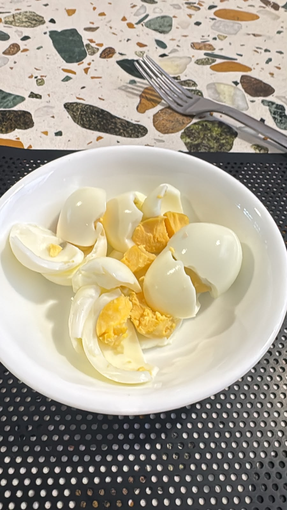
- 12:00 PM
Pineapple cake, 1 slice
Estimate: ~3g protein, ~280 kcal, ~28g sugar
No photo provided for this entry.
- 1:00 PM
Lunch (today's menu): Green Goddess tikkis x5 + kachumbar salad + peri peri Greek yoghurt + 1 Gobbleright beetroot quinoa wrap
Estimate: ~26g protein, ~580 kcal, ~9g sugar
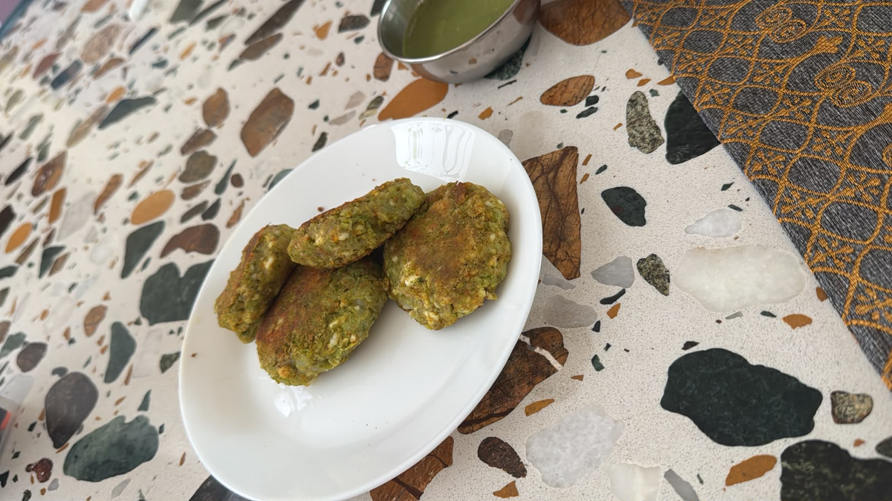
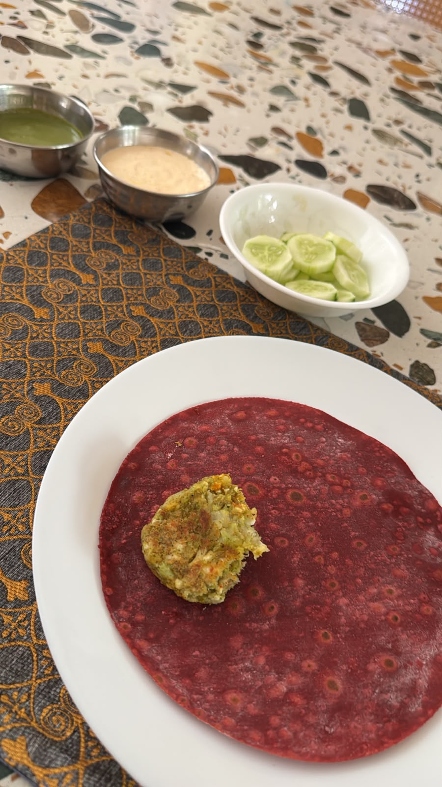
- 3:44 PM
Millet Amma Jeera Bhakri (baked), 3 slices
Label: 5.5g protein, 276 kcal, ~0.2g sugar (3 slices; scaled from 2-piece serving on package)
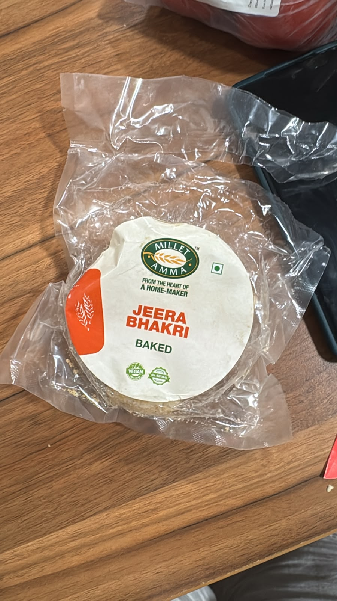
- 4:05 PM
Honey ginger matcha latte, Kongsi Tea Bar
Estimate: ~4g protein, ~120 kcal, ~16g sugar (±15%)
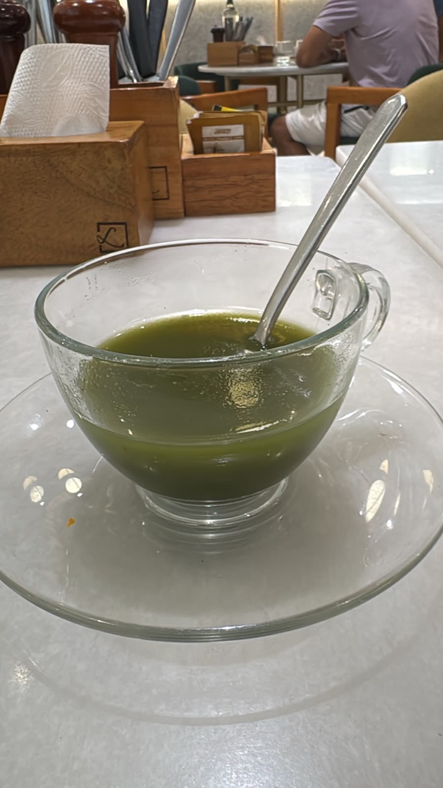
- 5:05 PM
Alphonso Mango Protein Lassi, Basil (The Marketplace, RMZ Ecoworld)
178 kcal (Basil menu); estimate: ~19g protein, ~27g sugar (±15%)
Basil's listed ingredients: frozen Alphonso mango, curd, whey protein, jaggery and honey.
No photo provided for this entry.
- 6:30 PM
Dinner (today's menu): Red curry tofu bake + sauteed greens + small cup of rice
Estimate: ~22g protein, ~500 kcal, ~9g sugar (±15%)
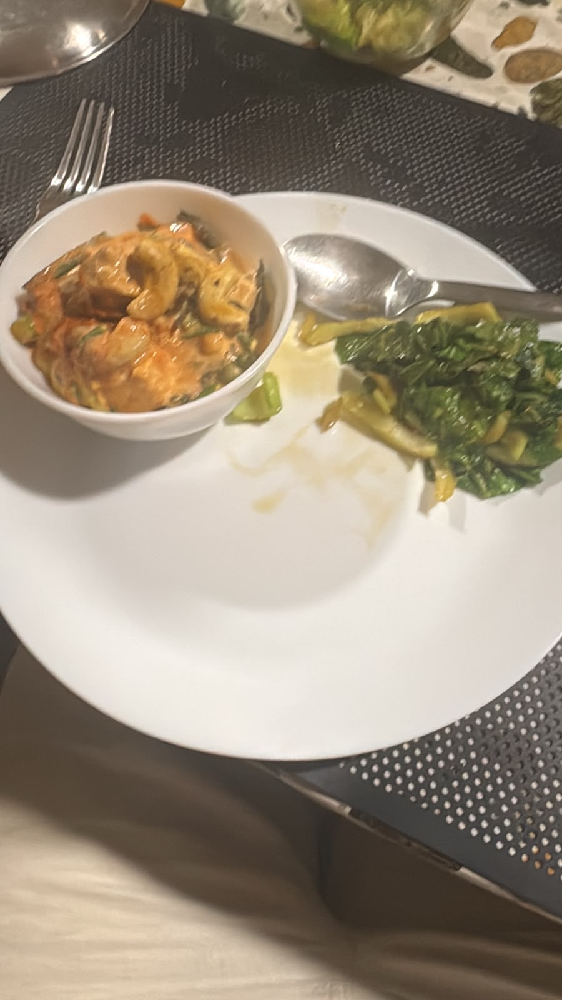
Estimated totals
Friday, September 25, 2026
- 9:30 AM
Cosmix protein shake, 1 scoop (38g)
Estimate: ~24g protein, ~135 kcal, ~1g sugar
No photo provided for this entry.
- 1:05 PM
Lunch (today's menu): Quinoa Fried Rice with Tofu and Vegetables + Veg Clear Soup - no Gobbleright Beetroot Quinoa Wrap on the plate
Estimate: ~33g protein, ~775 kcal, ~14g sugar, by container volume - Mepal Take a Break Large: quinoa fried rice with tofu and veg fills both tray sections (~800ml of the ~900ml divided tray, ~570g: ~28g / ~630 kcal / ~7g sugar); veg clear soup ~80% of the 600ml container (~480ml: ~5g / ~145 kcal / ~7g sugar) (±15%)
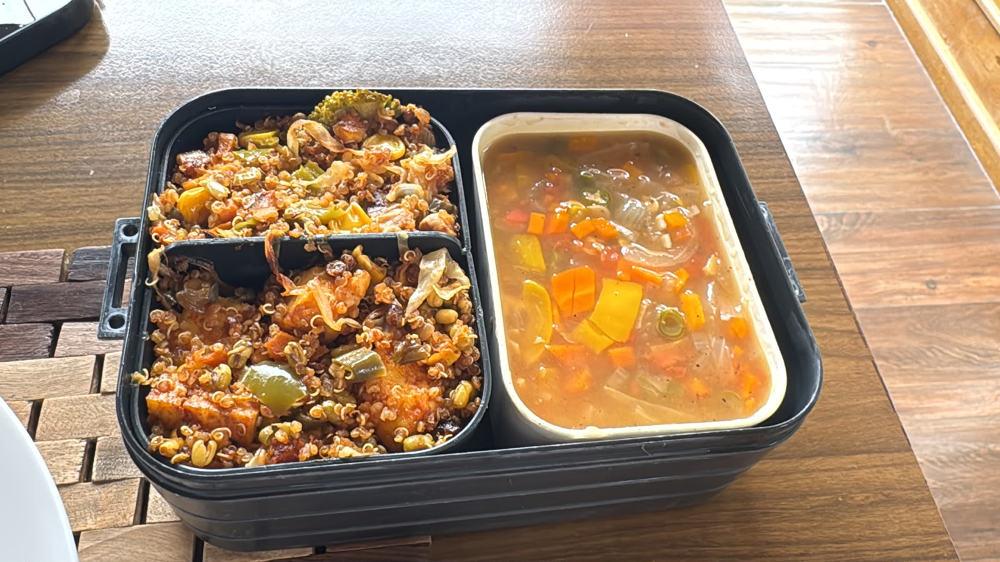
- 5:10 PM
Cosmix protein shake, 1 scoop (38g)
Estimate: ~24g protein, ~135 kcal, ~1g sugar
No photo provided for this entry.
- 6:50 PM
Dinner: Vegetable Bhaji with Chickpea + shredded low-fat paneer, three slices of gluten-free bread
Estimate: ~24g protein, ~580 kcal, ~6g sugar (±15%)
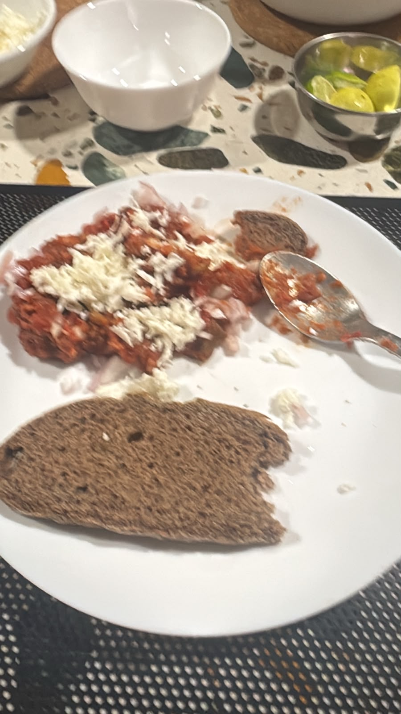
- 8:50 PM
Dessert: Charvi's chocolate avocado mousse (whole batch) - 200g Greek yogurt, 1/2 avocado, 2 tsp cocoa, 1.5 tbsp honey
Estimate: ~22g protein, ~340 kcal, ~33g sugar (±15%)
No photo provided for this entry. Based on the recipe in the Recipes tab; honey included in this batch.
Estimated totals
Thursday, September 24, 2026
- 10:15 AM
Cosmix protein shake, 1 scoop (38g)
Estimate: ~24g protein, ~135 kcal, ~1g sugar
No photo provided for this entry.
- 10:20 AM
Morning eggs: egg whites + capsicum
Estimate: ~14g protein, ~150 kcal, ~0g sugar
No photo provided for this entry.
- 12:35 PM
Lunch: Weight-Loss Burrito Bowl (last night's planned dinner) - quinoa, rajma, low-fat paneer, capsicum, corn, yoghurt nut sauce + beetroot Greek yoghurt dip
Estimate: ~44g protein, ~740 kcal, ~18g sugar (bowl ~32g / ~620 kcal / ~9g sugar; beetroot Greek yoghurt ~12g / ~120 kcal / ~9g sugar)
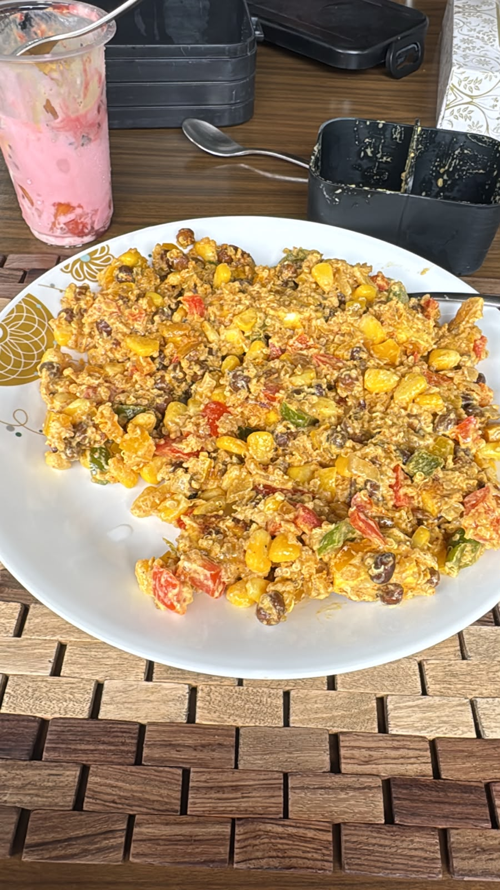
- 12:45 PM
Gudbud mini from Shetty Lunch Home
Estimate: ~4g protein, ~230 kcal, ~30g sugar
No photo provided for this entry.
- 2:35 PM
Afternoon: matcha with cinnamon - no milk, no sugar
Estimate: ~0g protein, ~5 kcal, ~0g sugar
No photo provided for this entry.
- 4:20 PM
Office snack: cucumber spears + carrot sticks over hummus
Estimate: ~4g protein, ~130 kcal, ~5g sugar
- 6:50 PM
Dinner (today's menu): Moth, Black Dal and Tofu Curry + Broccoli Sabzi with red capsicum - no Matta Rice on the plate
Estimate: ~28g protein, ~440 kcal, ~9g sugar (dal + tofu curry ~23g / ~330 kcal / ~4g sugar; broccoli sabzi ~5g / ~110 kcal / ~5g sugar)
- 7:10 PM
Evening snack: 1 cup anar (pomegranate arils, ~170g)
Estimate: ~3g protein, ~145 kcal, ~24g sugar
No photo provided for this entry.
Estimated totals
Wednesday, September 23, 2026
- 8:55 AM
Cosmix protein shake, 1 scoop (38g)
Estimate: ~24g protein, ~138 kcal, ~1g sugar
No photo provided for this entry.
- 12:45 PM
Lunch: egg bhurji with tomato and peppers + 1 ragi roti + green chutney
Estimate: ~23g protein, ~435 kcal, ~4g sugar
- 3:05 PM
Afternoon snack: carrot sticks, cucumber slices + half an avocado
Estimate: ~3g protein, ~185 kcal, ~8g sugar
- 4:10 PM
Cosmix protein shake, 1 scoop (38g) - second of the day
Estimate: ~24g protein, ~138 kcal, ~1g sugar
No photo provided for this entry.
- 6:55 PM
Dinner: Desi Tikka Fusion Bowl with high-pro paneer add-on - house-made paneer tikka, rajamudi red rice, veggies, roasted chickpea, yogurt dressing
29.5g protein, 505 kcal (vendor-stated: base bowl 445 kcal / 22g + paneer add-on 60 kcal / 7.5g); sugar ~8g (estimate, not stated by vendor)
Calories and protein are the vendor's stated nutrition, not estimates.
- 7:15 PM
Evening snack: 1/3 of an Epigamia 22g-protein Greek yogurt cup with pomegranate seeds
Estimate: ~7g protein, ~90 kcal, ~12g sugar
- 7:15 PM
Tutti frutti biscuit x1
Estimate: ~0.5g protein, ~45 kcal, ~6g sugar
No photo provided for this entry.
Estimated totals
Tuesday, September 22, 2026
- Morning
Cosmix protein shake, 1 scoop (38g)
Estimate: ~24g protein, ~138 kcal
No photo provided; logged via Rose.
- 1:26 PM
Lunch: beetroot tikki x5 with green chutney and tomato-based sabzi + 2.5 egg whites (home meal)
Estimate: ~21g protein, ~523 kcal
- 2:37 PM
Afternoon: hot matcha with slight salted caramel (cafe)
Estimate: ~5g protein, ~120 kcal
No photo provided for this entry.
- 5:00 PM
Cosmix protein shake, 1 scoop (38g) - second of the day
Estimate: ~24g protein, ~138 kcal
No photo provided for this entry.
- 8:10 PM
Evening snack: half pink guava + 1 cup pomegranate seeds
Estimate: ~4g protein, ~215 kcal, ~30g sugar
No photo provided for this entry.
- 8:15 PM
Dinner: veg jalfrezi (1 serving) + roasted low-fat tawa paneer (1 cup) + veg raita (1 cup)
Estimate: ~35g protein, ~520 kcal, ~16g sugar
No photo provided for this entry.
- 10:40 PM
Korean bakery biscuit, 1 piece
Estimate: ~2g protein, ~100 kcal, ~9g sugar
No photo provided.
- 11:55 PM
Karachi Bakery fruit biscuits, 3 pieces (around midnight)
Estimate: ~2g protein, ~170 kcal, ~15g sugar
No photo provided for this entry.
Estimated totals
Monday, September 21, 2026
- 9:13 AM
Cosmix Fermented Yeast Protein shake (Indonesian Cacao) in water
26g protein, ~130 kcal
No photo provided for this entry.
- 9:14 AM
Boiled egg whites (about 3) + stir-fried capsicum and onion
Estimate: ~14g protein, ~150 kcal, ~4g sugar
- 12:55 PM
Lunch: rice-vegetable salad (rice, cucumber, mango, cherry tomato, kale and herbs) + tofu stir-fry with greens + mint chutney
Estimate: ~29g protein, ~585 kcal (±15%)
- 1:08 PM
Lunch (continued): fruit plate - papaya, watermelon, dragon fruit and pineapple
Estimate: ~2g protein, ~145 kcal (±15%)
- 2:15 PM
Afternoon snack: carrot and cucumber sticks + half an avocado, cubed
Estimate: ~3g protein, ~195 kcal (±15%)
- 5:25 PM
Afternoon: Cosmix protein shake, 1 scoop (second of the day)
Estimate: ~24g protein, ~130 kcal (±15%)
No photo provided for this entry.
- 6:48 PM
Dinner: mangodi ki sabzi, gavar phali, jowar-quinoa roti and Greek yogurt raita (home meal)
Estimate: ~30g protein, ~600 kcal (±15%)
Estimated totals
Sunday, September 20, 2026
- 9:55 AM
Cosmix yeast protein powder, 1 scoop (38g) in water
Estimate: ~24g protein, ~138 kcal, ~1g sugar
No photo provided for this entry.
- 10:35 AM
3 egg whites + 1 whole boiled egg
Estimate: ~17g protein, ~129 kcal, ~0g sugar
No photo provided for this entry.
- 1:20 PM
Half portion - grilled vegetable salad with feta (zucchini, peppers, cherry tomatoes, broccoli, rocket) + bread with butter (Lavonne)
Estimate: ~6g protein, ~230 kcal, ~3g sugar
- 3:05 PM
17 grain matcha (Day Month Year cafe)
Estimate: ~6g protein, ~150 kcal, ~12g sugar
No photo provided for this entry.
- 3:10 PM
Guacamole and tortilla chips (Day Month Year cafe, HSR Layout)
Estimate: ~6g protein, ~530 kcal, ~2g sugar
- 8:00 PM
Dinner: ~1/3 tofu quinoa bowl + ~1/3 Mexican paneer bowl (Harvest Salad Co, shared)
Estimate: ~17g protein, ~343 kcal, ~7g sugar (portion-based estimate; protein is more reliable than calories)
No photo provided for this entry.
Estimated totals
Saturday, September 19, 2026
- 10:20 AM
Boiled egg whites with black pepper (5 whites, yolks removed) + Cosmix fermented yeast protein (1 scoop)
Estimate: ~42g protein, ~223 kcal, ~1g sugar
- 9:45 AM
Sports Research Organic Collagen Peptides, Dark Chocolate, 1 scoop in water
Estimate: ~10g protein, ~50 kcal, ~0g sugar
- 1:30 PM
Lunch: lemon-herb baked tofu (~120-150g), cooked quinoa (~3/4 cup), edamame hummus (~3 tbsp), pomegranate Persian salad
Estimate: ~32g protein, ~520 kcal, ~10g sugar (tofu ~180 kcal/18g protein; quinoa ~170 kcal/6g; edamame hummus ~90 kcal/6g; salad ~80 kcal/2g)
- 1:40 PM
Snack at the kids' fair - small plate of bhel puri + 2 pieces pani puri
Estimate: ~5g protein, ~230 kcal, ~12g sugar (bhel puri small plate ~170 kcal/4g protein; 2 pani puri ~60 kcal/1g protein)
- 2:50 PM
Snack: Sunny Hills pineapple cake, 1 piece (~50g)
Estimate: ~2g protein, ~220 kcal, ~25g sugar
- 7:45 PM
Dessert: protein chocolate yogurt pudding (Charvi's recipe #1) - 1 full cup Athena 22g-protein natural yogurt, 1 scoop Cosmix fermented yeast protein (38g), 1 tsp cocoa, splash of almond milk
Estimate: ~46g protein, ~290 kcal, ~8g sugar
No photo provided for this entry.
- 8:25 PM
Dinner: chickpea-zucchini lentil red-sauce pasta with a little roasted mushroom + spinach (EVOO), small portion (~1 cup total)
Estimate: ~18g protein, ~350 kcal, ~6g sugar
No photo provided for this entry.
Estimated totals
Friday, September 18, 2026
- 9:55 AM
Breakfast - 4-egg-white masala omelette, 1 toast, 1 paneer chilla, papaya (Taj Lands End, Mumbai)
Estimate: ~30g protein, ~420-460 kcal
- 12:40 PM
Cosmix protein shake (on flight 6E 5217, BOM-BLR)
Estimate: ~26g protein, ~130 kcal
- 1:23 PM
Bhatti Paneer Salad (IndiGo in-flight, 6E 5217 BOM-BLR) GF by composition
Pack label: 231.7 kcal, 13.4g protein, 5.6g carbs, 17.3g fat
- 4:58 PM
Late lunch: mushroom toast - sourdough slice, mushroom pâté, roasted mushrooms, balsamic glaze (Lavonne, Sarjapur Rd, RMZ Ecoworld)
Estimate: ~14g protein, ~500 kcal (contains gluten - sourdough)
- 5:19 PM
Honey ginger matcha (Lavonne, Sarjapur Rd)
Estimate: ~1g protein, ~70 kcal
- 6:52 PM
One whole dragon fruit
Estimate: ~150 kcal, ~3g protein
Estimated totals
Thursday, September 17, 2026
- 9:00 AM
Cosmix protein shake
26g protein, ~130 kcal
- 9:35 AM
Paneer tikka with grilled capsicum and onion (home-packed bowl, eaten in the car to the airport)
Estimate: ~20g protein, ~350-400 kcal
- 10:50 AM
Classic matcha from Smoor (to go, at BLR airport)
Estimate: ~3g protein, ~140 kcal (matcha latte baseline; usually oat milk, no sugar)
- 2:00 PM
Tofu scramble with gluten-free bread + broccoli pea soup (Earth Cafe, BKC Mumbai)
Estimate: ~28-32g protein, ~550-630 kcal (restaurant meal)
- 5:30 PM
Bay Club super green salad, 140g - avocados, pistachios, asparagus, edamame (The Bay Club "Cafe To Go", Mumbai)
308 kcal per the menu; estimated ~10g protein
₹750
- 9:30 PM
Dinner - mushroom on lavash (2 slices), paneer gravy (1 cup, makhani-style), 1 naan (Taftoon, Mumbai)
Estimate: ~25-27g protein, ~700-850 kcal (restaurant meal)
Estimated totals
Wednesday, September 16, 2026
- 8:46 AM
Cosmix Fermented Yeast Protein shake (Indonesian Cacao) in water
26g protein, ~130 kcal
- 3:30 PM
Sports Research Organic Collagen Peptides, Dark Chocolate, 1 scoop in water
10g protein, 50 kcal
- 10:22 AM
Boiled eggs with pepper
~14g protein, ~150 kcal
- 12:45 PM
Lunch: creamy crunchy chana-makhana salad (roasted makhana) + tomato-beetroot soup with roasted tofu cubes
~20g protein, ~450-500 kcal
- 5:28 PM
Fruit bowl: golden kiwi, blueberries, pomegranate
~1g protein, ~85 kcal
- 6:26 PM
Dinner: tofu-quinoa salad bowl - spiced tofu cubes, quinoa, avocado, roasted sweet potato, mixed veg, seeds; dressing on the side
~30g protein, ~600-670 kcal
- 10:00 PM
Karachi Bakery fruit biscuit, 1 piece
Estimate: ~1g protein, ~50 kcal, ~2g fat, ~7g carbs
- 10:30 PM
Before sleeping: homemade dessert - Greek yogurt, cocoa powder, peanut butter, almond milk and ice, blended (1.5 small glasses)
Estimate: ~20g protein, ~230 kcal, ~10g fat, ~12g carbs
His own recipe; a good fat-loss-friendly dessert choice.
Estimated totals
Tuesday, September 15, 2026
- 9:15 AM
Cosmix Fermented Yeast Protein shake (Indonesian Cacao) in water
26g protein, ~130 kcal
- 11:28 AM
Breakfast: 3 egg whites + 1 whole egg, sauteed mushrooms and spinach
~20g protein, ~220 kcal
- 1:24 PM
Lunch: chatpata corn + paneer salad, spinach soup
~20g protein, ~450 kcal
Lunch - chatpata corn + paneer salad - 2:30 PM
Hot matcha with oat milk, no sugar
~3g protein, ~140 kcal
- 4:12 PM
Snack: carrots, cucumber, half avocado
~2g protein, ~180 kcal
Snack - carrots, cucumber, avocado - 5:03 PM
Cosmix protein shake
~26g protein, ~130 kcal
- 6:50 PM
Dinner: 4 sattu tikkis, roasted masala vegetables, Greek yogurt dip
~34g protein, ~700 kcal
Dinner - sattu tikkis, roasted vegetables, Greek yogurt dip - 7:07 PM
Half cup Athena Greek yogurt + 1 kiwi
~12g protein, ~140 kcal
Greek yogurt and kiwi
Estimated totals
Dishes
Every dish gets one stable key, so a rating made once shows wherever that dish appears.
Recipes
From this week's meal plan and familiar favorites. Tap a recipe for ingredients and a quick method. Nutrition is an estimate per serving, not a replacement for a weighed recipe.
Sakshi's food log
Sunday, September 27, 2026
- 1:19 PM
Lunch: Tostada de Sandia, half portion (Comedor, Indiranagar)
Estimate: ~2g protein, ~120 kcal, ~6g sugar (±15%; half portion)
- 1:29 PM
Lunch (continued): Chiles Rellenos de Mole - mulato/ancho chili stuffed with seasonal vegetables on mole verde, with rice, half portion (Comedor, Indiranagar)
Estimate: ~5g protein, ~225 kcal, ~4g sugar (±15%; half portion)
- 1:49 PM
Lunch (continued): Queso Birria taco - lentil filling with consomme, avocado and pico de gallo, 1 taco (Comedor, Indiranagar)
Estimate: ~9g protein, ~250 kcal, ~3g sugar (±15%)
- 8:00 PM
Dinner at Katana (with Sunny and Ankita) - her share: 1 sushi piece, some mushroom pate, small cup noodles, some fried tofu, 1/4 slice Japanese cheesecake, 1/4 slice Japanese chocolate cake
Estimate: ~21g protein, ~750 kcal, ~31g sugar (±15% - sushi ~2g / ~50 kcal / ~1g; mushroom pate ~2g / ~80 / ~1g; cup noodles ~5g / ~250 / ~2g; fried tofu ~8g / ~150 / ~2g; 1/4 cheesecake ~2g / ~100 / ~10g; 1/4 chocolate cake ~2g / ~120 / ~15g)
No photo provided for this entry.
Estimated totals
Saturday, September 26, 2026
- 6:35 PM
Dinner: sauteed greens (bok choy, zucchini) + baked red curry tofu (peas, carrots, zucchini, coconut sauce) with ~3/4 cup brown rice/shirataki mix
Estimate: ~24g protein, ~580 kcal, ~10g sugar (±15%)